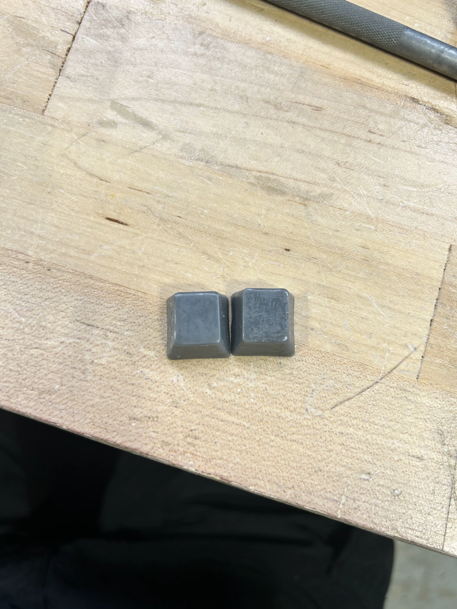
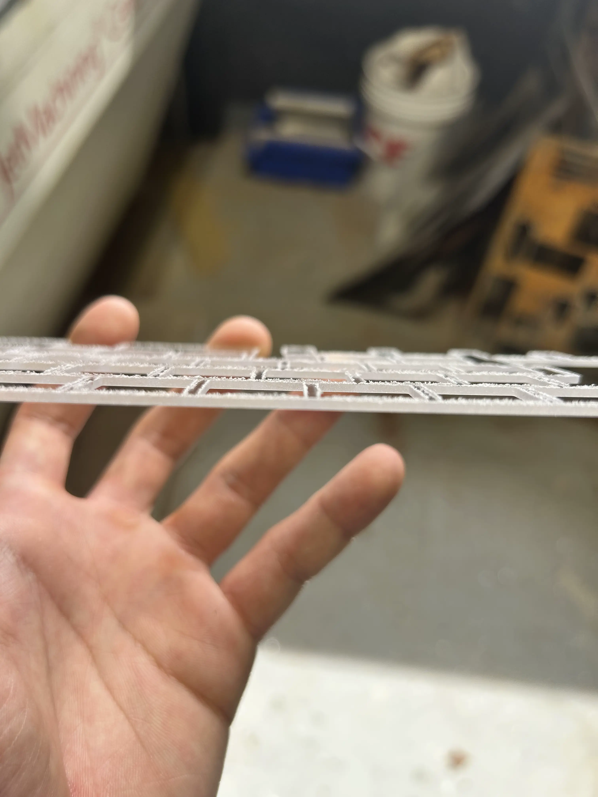

junior week mar. 18, 2026
no school friday. slightly shorter week as a result
keyboard updates
fuck you resin printer for failing my keycap print twice (i'm not ranting about this for the third time i hate resin printing sm omg)
so yeah keycaps currently printing so that's that
so the "paint" on my keycaps weren't the best because myy dumbass decided to not wash before curing.
however, some of the super thin layers were easy to remove and led to a clean finish
while the thicker layers required a bit of cutting

left side is the thin layer that's been removed, right side is the thicker layer partially removed
probably gonna just gonna repaint all of them and hopefully it works out?
so with keycaps hopefully printing, i started working on the plate.
jonas and a little help from mr. christy taught me how to use the waterjet, so we cut out my piece with polycarbonate
ended up exactly how i wanted but had a few "dings". grabbed a debur and started deburring

you can see little "strings" standing out. i deburred most of them
before testing it, mr.christy had a task from metal fab to cut these "donuts" out of scrap metal.
jonas modeled it up and he guided me as i set up the waterjet to cut it
so here's the current progress
it actually sounds pretty nice with the plate. potential audio file next blog post?